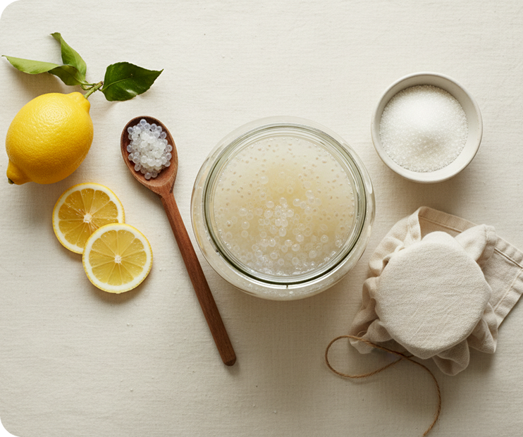

Tu primera fermentación, paso a paso.
Una rutina simple para mantener tus tíbicos activos y conseguir una bebida equilibrada desde el primer frasco.
Ver guía de cultivo
Solo necesitas cinco cosas.
- 1 L de agua
- 40 g de azúcar o fruta fresca
- 50 g de tíbicos
- 1 frasco de vidrio
- Tela y liga
Solo cuatro pasos.
-
01
Prepara
Disuelve 40 g de azúcar o añade la fruta en 1 litro de agua sin cloro.
-
02
Alimenta
Añade 50 g de tíbicos y una rodaja de limón.
-
03
Fermenta
Cubre con tela y deja reposar entre 24 y 48 horas.
-
04
Cuela
Separa los tíbicos con un colador plástico y envasa.

¿Cómo lo conservo?
Embotella el kéfir colado y refrigera durante 12–24 horas.
Abre la botella con cuidado, la presión aumenta rápidamente.
-
Si huele ácido
Reduce el tiempo de fermentación o usa más agua en la siguiente tanda.
-
Si no hay burbujas
Dales dos ciclos; evita agua clorada y utensilios metálicos.
-
Si vas a descansar
Refrigera los tíbicos en agua azucarada hasta una semana.